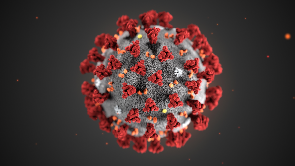

First disease
We are a team of professors, mentors, and university students formed through a project hosted by ICT Mentoring.
기존의 진단시스템으로 면역 진단법인 항원 항체 검사와 분자진단법(PCR)이 사용되고 있다. 항원 항체 검사는 정확도가 낮고, 분자 진단법의 경우 실험실에서 수행되어야 하는 단점이 있다. 위 단점을 극복한 QD-OLED 하이드로겔 저온 증폭 기술을 활용한 방법이 개발되었다.
CMOS 패턴 이미지를 데이터로 저장하고 인공지능을 이용해 바이러스 검출 모델을 개발한 후 개발한 바이러스 검출 모델을 이용하여 바이러스를 검출하고 질병을 진단한후 사용자에게 질병 결과를 사용자 UI를 통해 제공한다.
Azure Function, Azure Storage, Azure Event Grid, Azure Cosmos DB, Azure Machine Learning, Azure Application Insights, Azure Key Vault로 Azure 을 적극 활용하여 개발함.
전문가가 필요한 기존 검사 체계를 비전문가도 가능한 검사 체계로 개발함으로써 시간 절약, 비용 절감, 정확도 향상, 사용성 항상 측면에 크게 기여할 수 있을 것이며, 인공지능을 이용한 진단 시스템과 의료진의 역량이 합쳐짐으로써 의료체계가 기존보다 강화될 수 있다.

Brief description of various diseases
2019년 12월 중국 우한에서 처음 발생한 이후 중국 전역과 전 세계로 확산된, 새로운 유형의 코로나바이러스(SARS-CoV-2)에 의한 호흡기 감염질환이다.코로나바이러스감염증-19는 감염자의 비말(침방울)이 호흡기나 눈·코·입의 점막으로 침투될 때 전염된다. 감염되면 약 2~14일(추정)의 잠복기를 거친 뒤 발열(37.5도) 및 기침이나 호흡곤란 등 호흡기 증상, 폐렴이 주증상으로 나타나지만 무증상 감염 사례 빈도도 높게 나오고 있다.
흔히 플루(flu)라고 말하는 급성 바이러스(virus) 감염 질환이다. 호흡기(respiratory track)를 공격하여 목이 붓고 열이 나며, 기침, 재채기, 콧물, 코막힘, 오한, 근육통, 두통, 복통 등과 급격한 피로를 동반한다. 보통 바이러스 감염 후 2~3일정도의 잠복기를 거쳐 1 주일에서 10일 정도 앓게 된다. 합병증으로 폐렴(pneumonia)이 되거나, 천식(asthma)이나 심장병(heart failure)같은 지병이 있는 경우 사망에 이를 수 있다.
홍역 바이러스가 비말 감염에 의하여 일으키는 급성 전염병. 1~6세의 어린이에게 많고 봄철에 많다. 잠복기는 약 10일로, 감기와 비슷한 증상으로 시작하여 입안 점막에 작은 흰 반점이 생기고 나중에는 온몸에 좁쌀 같은 붉은 발진이 돋는다. 한 번 앓으면 다시 걸리지 않는다.
독감은 인플루엔자 바이러스에 의한 급성 호흡기 질환이다. 독감은 상부 호흡기계(코, 목)나 하부 호흡기계(폐)를 침범하며 갑작스런 고열, 두통, 근육통, 전신 쇠약감과 같은 전반적인 신체 증상을 동반한다. 독감은 우리나라를 비롯한 전 세계에서 발생하며, 계절 구분이 있는 지역에서는 매년 겨울에 소규모로 유행되고 있다. 독감은 전염성이 강하고, 노인, 소아, 및 기저질환이 있는 사람이 이환되면 사망률이 증가하고 합병증이 발생할 수 있다.
감기는 바이러스에 의해 코와 목 부분을 포함한 상부 호흡기계의 감염 증상으로, 사람에게 나타나는 가장 흔한 급성 질환 중 하나이다. 재채기, 코막힘, 콧물, 인후통, 기침, 미열, 두통 및 근육통과 같은 증상이 나타나지만 대개는 특별한 치료 없이도 저절로 치유된다.
수두-대상포진 바이러스(varicella-zoster virus)에 의한 급성 바이러스성 질환이다. 증상은 급성 미열로 시작되고 신체 전반이 가렵고 발진성 수포(물집)가 생긴다. 잠복기간은 2~3주, 보통 13~17일이다. 수두나 대상포진의 수포에서 나오는 액의 직접 접촉 또는 공기를 통해서 전파된다. 감염자의 타액(침)을 통해서도 전파될 수 있다. 수포는 발생 초기일수록 전염성이 강하고, 딱지가 생기면 전염되지 않는다.